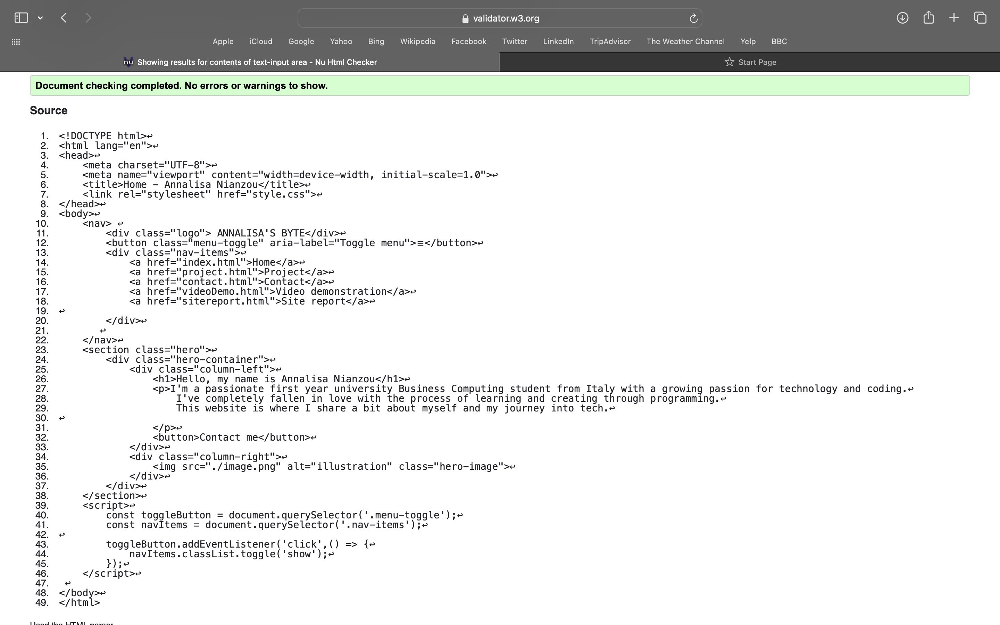
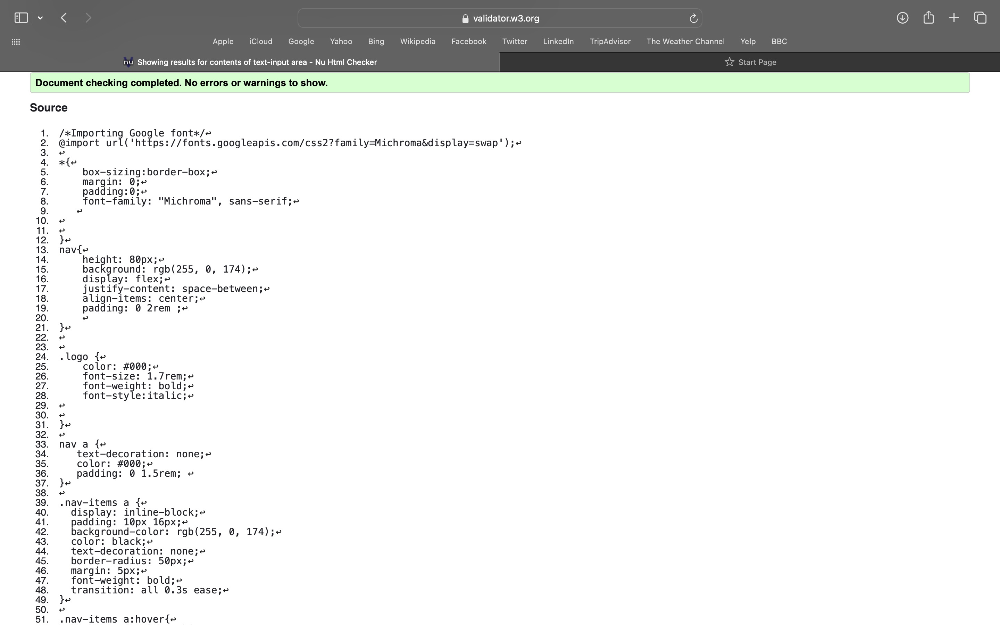
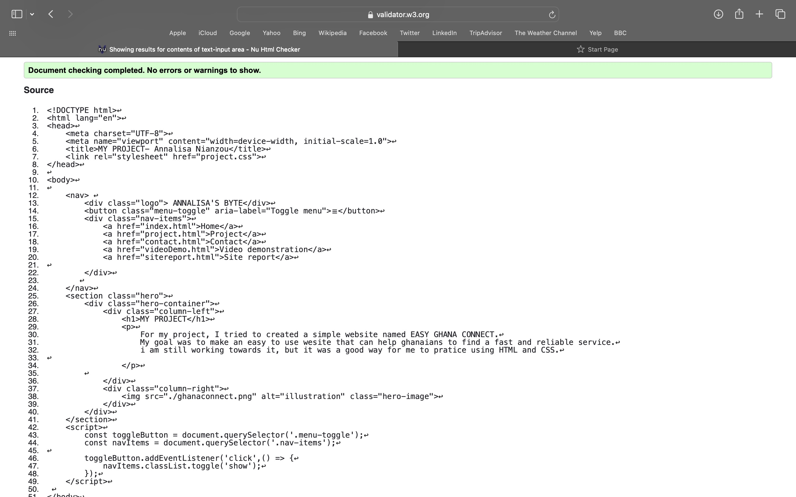
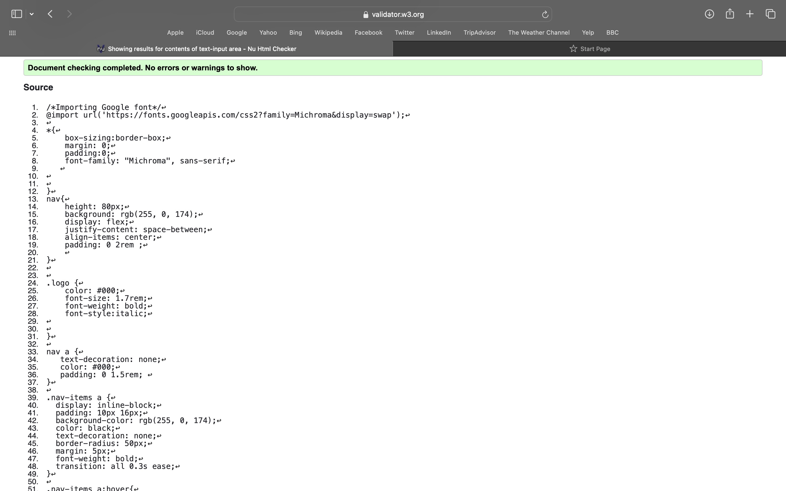
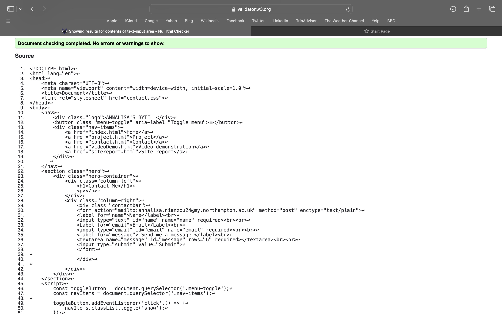
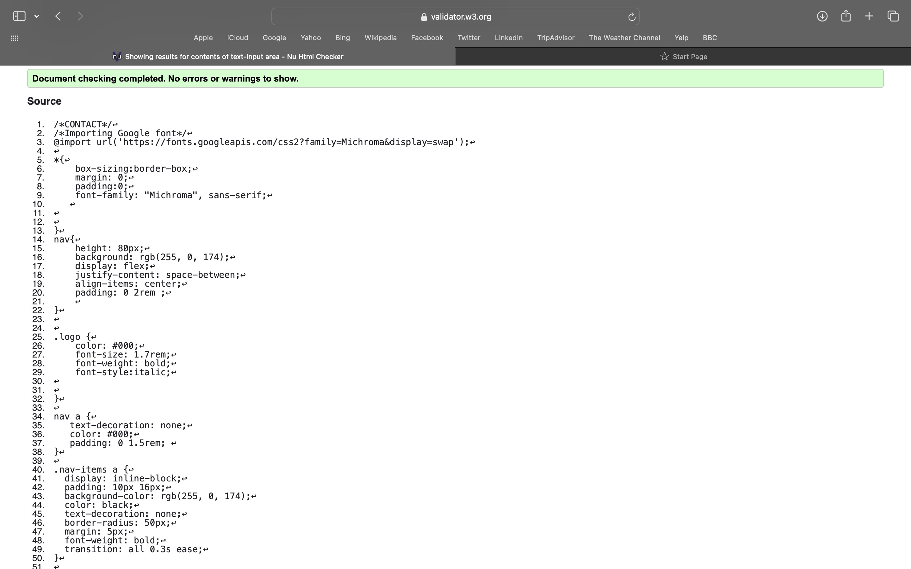
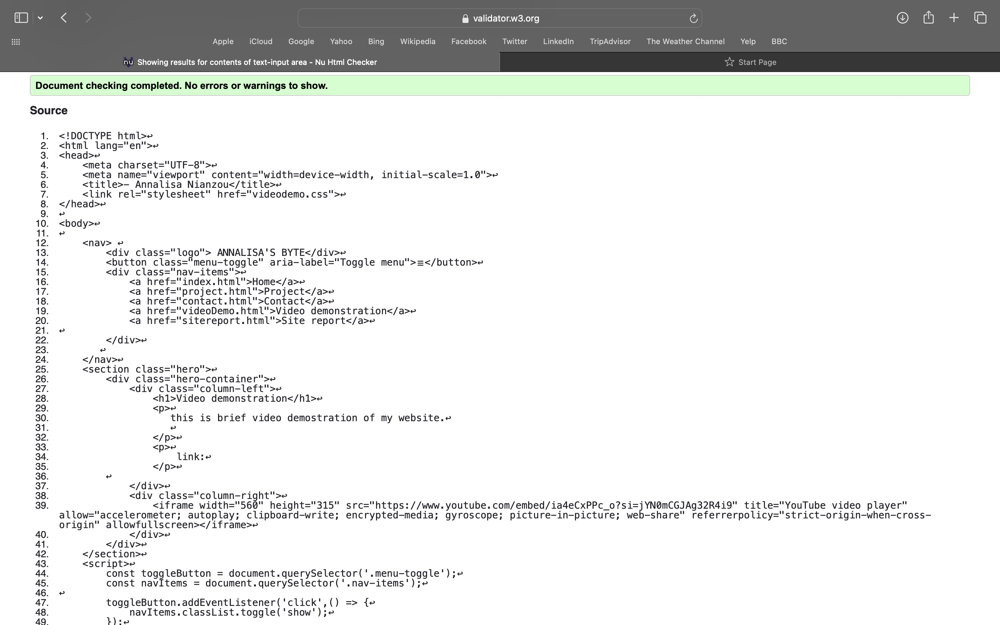
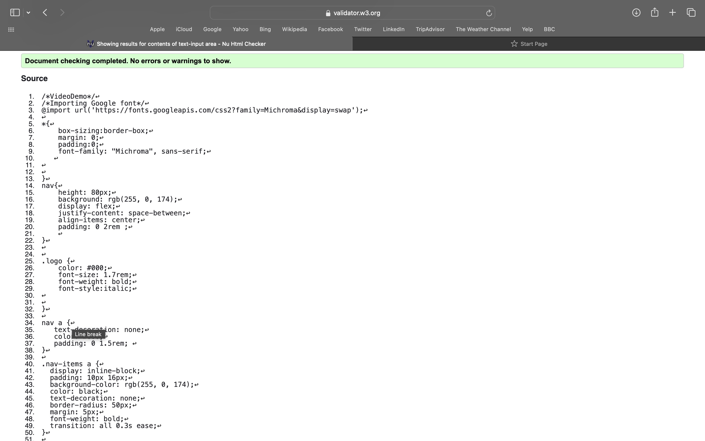
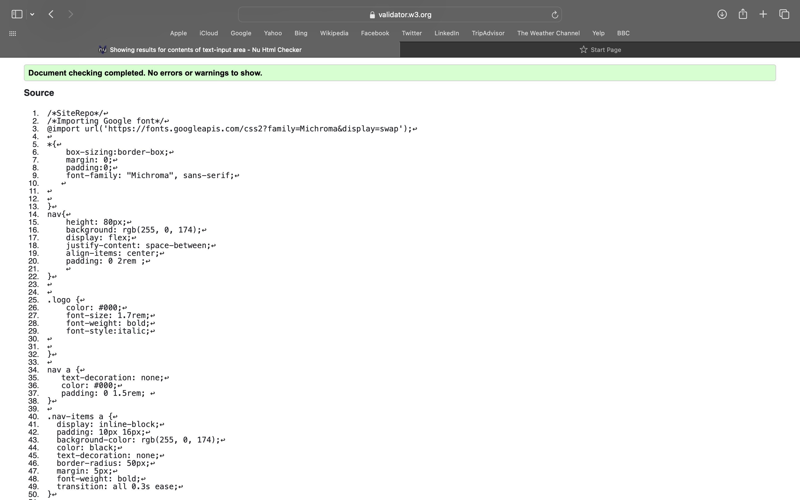

When I began this module, I had little understanding of how websites worked. I had heard of HTML and CSS, but I didn’t really know how to use them together or what JavaScript was for. The first few weeks were frustrating. Things broke easily, especially when I misunderstood how the box model or positioning worked. I would spend ages trying to fix small issues like overlapping text or buttons not responding. Debugging with the browser’s developer tools was confusing at first, but I slowly learned to use the inspector and console properly. That changed everything.
As I moved through the term, I focused most of my time on building my personal portfolio website, which is available on GitHub: https://github.com/AnnalisaNianzou/AS1-resit.git. I started with basic HTML structure and gradually added styling. I used Flexbox to handle layout and media queries to make the site responsive. The navigation menu changes on smaller screens, which was something I didn’t know how to do before this module.
For the design, I wanted a modern but simple look. I chose the “Michroma” font from Google Fonts because it had a clean, tech-style feel. The main accent colour is bright pink to add energy, paired with black and white for contrast and readability. I referenced designs from Awwwards and CSS-Tricks to understand layout spacing, typography, and navigation styles.
The most difficult part was understanding how HTML structure affects styling and layout. The most rewarding part was seeing my progress over time. I now feel much more confident reading and writing code. The process taught me not only how to build a website, but how to think through problems and test solutions step by step.








